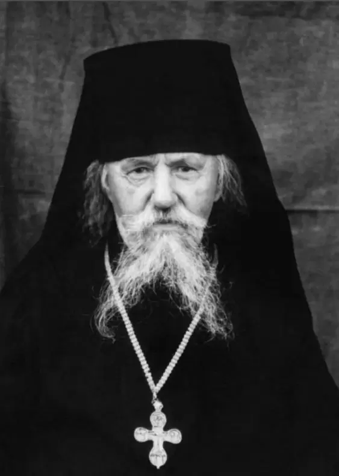

Поминайте наставников ваших, которые проповедовали вам слово Божие, и, взирая на кончину их жизни, подражайте вере их». (Евр.13.7)
Детские и юношеские годы.
Архимандрит Леонтий (Стасевич) родился 20 марта 1884 года в посаде Тарноград Белгорайского уезда Люблинского воеводства Холмской губернии Царства Польского, входившего в те времена в состав Российской империи. Во святом крещении младенец был наречен Львом в честь святителя Льва епископа Катанского. Родители его — Фома Федорович и Екатерина Стефановна — были крестьянами.
Один из родственников будущего старца, людей верующих и благочестивых, дядя Адам, был священником, протоиереем. Детей в семье долго не было. Когда маленький Лев появился на свет, Фоме Федоровичу было сорок четыре, а Екатерине Стефановне — тридцать два года. Лев был единственным ребенком в семье. По мере возрастания он поступил в двухклассное земское училище, а позже в четырехклассную гимназию.
Семья Стасевичей была верующей и благочестивой. С детства маленького Льва приучали к молитве, труду и добрым делам. Однажды мама попросила Льва сходить в лес за грибами. Набрав грибов, Лев торопился домой, но по дороге он вспомнил о бедных, одиноких старушках, живших рядом. Проходя мимо их домов, мальчик раздал им все собранные грибы.
Пришлось опять возвращаться в лес, чтобы набрать грибов домой. Мама беспокоилась из-за долгого отсутствия мальчика, но узнав, почему он задержался, не стала его ругать.
В семье Стасевичей часто бывали особые гости. Отец Леонтий вспоминал, что Фома Федорович, возвращаясь на лошадях с базара, иногда привозил с собой какого-нибудь странника, которому негде было переночевать. Странники, люди бедные, обычно благодарили добрых хозяев духовными песнопениями, рассказами об угодниках Божиих и обителях, в которых побывали на своем пути. Так, в любви, благочестии и труде, возрастал отрок, который благоволением Божиим стал добрым колосом на ниве Христовой.
С пятнадцати лет Лев начал работать писарем в Тарноградском суде. Похоронив отца в 1905 году, он стал единственным кормильцем престарелой матери. Но желание стать священником было так велико, что он испросив ее благословения поступил в Холмскую духовную семинарию. В брак Лев Фомич не вступал, желая всецело посвятить свою жизнь служению Богу. Вероятно здесь, в духовной семинарии, он познакомился с будущим Святейшим Патриархом, а тогда просто епископом Тихоном, который был одним из первых ректоров этой семинарии.
После окончания семинарии двадцатишестилетний Лев осуществил свое заветное желание: 31 декабря 1910 года он поступил в Яблочинский Свято-Онуфриевский мужской монастырь, расположенный в двух верстах от с. Яблочна Вельского уезда Седлецкой губернии. Монастырь этот был основан в начале XVI в. на небольшом речном острове, имел каменный храм и причетническую школу. В начале века он представлял собой образцовую процветающую обитель, в которой насчитывалось около тридцати пяти человек братии.
В 1912 году, в Великий Понедельник настоятелем монастыря архимандритом Серафимом (Остроумовым; позже архиепископом Смоленским, был расстрелян в 1937 году) Лев Фомич был пострижен в монашество с именем Леонтий в честь Леонтия, святителя Ростовского. В этом же году отец Леонтий похоронил свою мать, со смертью которой прервалась последняя нить, связывающая его с миром. 29 октября 1912 года епископом Евлогием Холмским о. Леонтий был возведен в сан иеродиакона, а 20 мая 1913 года епископом Анастасием в сан иеромонаха. С1913по1915 год батюшка состоял казначеем монастыря.
В Яблочинском монастыре у о. Леонтия проявилась любовь к частому и строгому уставному богослужению, которую он пронес через всю свою жизнь. Хотя о. Леонтий прожил в монастыре менее пяти лет, пребывание в нем оказало существенное влияние на его духовный облик. Преподобного Онуфрия, в честь которого был освящен главный храм обители, батюшка считал своим особым покровителем. После Литургии, во время отпуста крестом, о. Леонтий всегда пел тропарь преподобному Онуфрию Великому и говорил, что «учил его преподобный Онуфрий».
В 1914 году началась I Мировая война, и вскоре братия Яблочинского монастыря, ввиду близости линии фронта, была эвакуирована в глубину России. О. Леонтий был определен в одну из наиболее почитаемых русских обителей — московский Богоявленский монастырь, расположенный неподалеку от Кремля. Монастырь этот был основан в ХШ веке святым благоверным князем Даниилом Московским. Одним из его первых настоятелей был брат преподобного Сергия Радонежского Стефан. В нем же принял монашеский постриг святитель Алексий, митрополит Московский.
В штат монастыря о. Леонтий был зачислен в 1916 году, а в 1917 году, по ходатайству преосвященного Иоасафа, Святейшим Синодом Русской Православной Церкви был награжден наперсным крестом. В 1919 году по благословению Святейшего патриарха Тихона и Святейшего Синода преосвященным Евсевием был возведен в сан игумена. С 1917 года батюшка учился в Московской Духовной Академии, которую он, однако, не окончил, ввиду роспуска последней в Великом посту 1919 года.
В те смутные годы, когда уже начались гонения на Церковь, многие монастыри, чтобы как-то выстоять и уберечься от закрытия, регистрировались как «трудовые коммуны», а монахи числились еще и на «общественной работе». В качестве послушания о. Леонтий был председателем кварталкомиструда №2 в Китай-городе и председателем домкома по адресу ул. Никольская, д.6.
26 ноября 1922 г. по ходатайству преосвященного Василия, епископа Суздальского, владимирским Епархиальным Управлением был назначен в суздальский Спасо-Евфимьев монастырь, и в том же году утвержден наместником этого монастыря, (указ №202)
Суздаль, первый арест, лагерь.
Суздальский Спасо-Евфимьев монастырь был основан в 1352 году. В начале XX века он представлял собой первоклассную обитель с пятью храмами и богатой ризницей, в которой хранилось множество драгоценных вкладов, церковной утвари и облачений. Братии в монастыре насчитывалось около ста человек.
Когда о. Леонтий прибыл в монастырь, он обнаружил, что жизнь в обители пришла в расстройство: должным чином не совершалось богослужение, требовали неотложного решения хозяйственные дела. Некоторые из братии также сочувствовали обновленческому расколу, терзавшему в те годы Церковь. Новый наместник принялся за наведение порядка, но столкнулся с враждебным отношением некоторых насельников. Отца Леонтия всячески поносили и злословили, и даже поднимали руку на своего настоятеля, пытаясь заставить батюшку покинуть монастырь. Но простые люди — паломники и жители Суздаля — полюбили отца Леонтия за его кротость, доброту и искреннюю веру.
Суздальский Спасо-Евфимьев монастырь
В 1923 году Спасо-Евфимьев монастырь был закрыт властями. Сохранились некоторые документы рассказывающие об этом событии.
«…Далее образ Преображения Господня; на Спасителе и двух пророках венцы и цаты серебряные вызолоченные, а на апостолах три венца без цат, но тоже сребропозлащенные чеканной работы; у Спасителя на цате в серебряных гнездах три камня: яхонт, бирюза и виписа (непонятное название в оригинале). Вся риза на иконе серебряная вызолоченная чеканной работы весом в 1 п. Внизу надпись, из которой видно, что риза сооружена усердием архимандрита Леонтия и других благотворителей при настоятеле архимандрите Досифее. Образ за зеркальным стеклом…»
СЛУШАЛИ: «…Тов. Коровин И. сделал доклад, в каком состоянии комиссия нашла Спасо-Евфи-мьевский монастырь; стены местами имеют трещины, обвалившуюся на местах щикотурку (ошибка в оригинале), обнаружено халатное отношение коллектива ко всему имуществе церкви и восстановить порядок в монастыре трудно, потребуются большие средства…»
ПОСТАНОВИЛИ: «Комиссия заслушав доклад постановила Спасо-Евфимьевский монастырь закрыть, все четыре церкви как то Преображенская, Успенская, Никольская и Благовещенская, здания и все имущество передать на хранение в суздальский Комунотдел, предложив последнему принять ключи и выставить охрану.
СЛУШАЛИ: Тов Коровин сделал доклад ввиду закрытия монастыря необходимо выселить монашествующих лиц из монастыря.
ПОСТАНОВИЛИ: Комиссия постановила немедленно запросить Коммунальный Отдел, чтобы предоставил помещение и выселить в 3-х дневный срок со дня объявления.
В Отдел Управления Комиссии по ликвидации монастырей по Суздальскому уезду и. д. Настоятеля Спасо-Евфимьевского монастыря Игумена Леонтия в мире Льва Фомича Стасевича.
Усердно прошу Отдел Управления сделать распоряжение о выдаче мне 1) иконы преподобного Онуфрия Великаго из Успенской церкви Спасо-Ев-фимьевского монастыря, привезенная мною в марте месяце 1922 г. и, за неимением места в келий, поставлена была временно в храме. Что вышеозначенная икона принадлежит мне, могут подтвердить члены общины при монастыре, и подобной иконы до моего приезда не было в монастыре. 2) Случайно попавших в храм Успенский: монашескую мантию и маленькую икону преп.
Онуфрия. Последняя находится в (зимнем) холодном храме Преображения Господня; и кроме того выдать мне удостоверение о том, что Спасо-Евфимьевский монастырь закрыт и к выезду моему из г. Суздаля со стороны Отдела Управления и Комиссии по ликвидации монастырей препятствий не встечается.
18 апреля 1923 года.
Протокол №5 заседания Укомисии по передаче церковных ценностей и ликвидации монастырей от 24 апреля 1923 года.
СЛУШАЛИ: Сношение Уполитпросвета №538 о передаче Сретенского храма Ризоположенско-го монастыря под устройство театра.
ПОСТАНОВИЛИ: Возбудить перед ИУК ходатайство о разрешении передачи Уполитпросвету просимого храма для устройство театра.
СЛУШАЛИ: Заявление гр. Стасевича о возвращении ему иконы и креста, оставшихся в Спасском монастыре.
ПОСТАНОВИЛИ: В просьбе отказать.
Батюшка остался в Суздале и Святейшим Патриархом Тихоном был назначен настоятелем двух приходов, Смоленского и свят. Иоанна Златоус-таго. Приходы, в которых служил о. Леонтий «придерживались тихоновской ориентации», строго хранили чистоту Православной веры и церковных канонов. 20 мая 1924 года Святейшим Патриархом о. Леонтий был возведен в сан архимандрита.
За время своего служения в Суздале о. Леонтий, несмотря на сложные условия, привлек к Церкви многих людей. Его имя стало широко известно верующим. На службу к о. Леонтию люди добирались из отдаленных от Суздаля мест, из городов Иваново и Тейково. Позже некоторые из них были репрессированы вместе с о. Леонтием.
В 1930 году о. Леонтий был арестован суздальским райотделом ОГПУ и приговорен к трем годам лагерей по статье 58-10 УК РСФСР, т.е. по стандартному обвинению в антисоветской контрреволюционной деятельности. Люди, долго общавшиеся с батюшкой, говорят, что в Суздале о. Леонтий вызвал недовольство местных властей тем, что препятствовал антирелигиозной пропаганде своими проповедями и ежедневным совершением богослужений.
Поводом же к аресту послужила любовь о. Леонтия к колокольному звону. Позже он вспоминал об этом так: «…звон тогда был запрещен. А мне… так захотелось Господа прославить звоном. Залез на колокольню и давай звонить. Долго звонил. Спускаюсь с колокольни, а меня уже встречают с наручниками».
Заключение о. Леонтий отбывал в Коми АССР. Он работал фельдшером при дорожно-строительном участке. Духовные чада о. Леонтия из Сузда-14 ля и Тейково посылали ему продуктовые и вещевые посылки. Но, говорят, что батюшка все, что получал, раздавал другим заключенным, не оставляя себе ничего.
Бородино. Второй арест.
В 1933 году о. Леонтий возвращается из лагеря. В 1934 году по благословению преосвященного Хрисанфа, епископа Юрьев — Польского, начинает служить в селе Бородино Гаврилово-Посадского района Ивановской Промышленной обрасти, включавшей в те времена территорию нынешних Ивановской, Владимирской, Костромской, Ярославской и частично Нижегородской областей. Так как Бородино находится почти на границе Суздальского и Гаврилово-Посадского районов, о. Леонтий мог поддерживать связь со своими духовными чадами из Суздаля. Однако пребывание батюшки на новом месте было недолгим — 11 ноября 1935 года он был опять арестован.
О. Леонтий рассказывал: «Когда я проходил в городе N. по улице, там сидел один блаженный, он предсказал мне: «Придет время, тебя поведут по улице и прикладами будут погонять». Это сбылось в Гавриловом Посаде. Нехитрое имущество о. Леонтия было конфисковано и погружено на телегу. Сам же он со связанными руками был за шею привязан к этой телеге, и как бессловесное животное, через весь город был веден на ошейнике. Под издевательства и насмешки толпы о. Леонтия в таком виде отправили в районный отдел НКВД.
В деле №237470 от 11 ноября 1935 г. (л. 134) говорится: «Вдохновителями Ивановской церковно-монархической группы являются ардатовский старец схимонах Иоанн и архим. Леонтий Стасевич. Архим. Стасевич проживая в деревне среди крестьян единоличников вел антиколхозную агитацию, выступал против налоговой политики советской власти.
Кроме того, Стасевич вовлекал в религиозную деятельность детей школьного и дошкольного возраста. В этих целях детям раздавал мелкие подарки в виде школьных перьев, тетрадей и денег на приобретение учебников. В результате подпавшие под влияние Стасевича дети просили своих родителей, чтобы их окрестили и регулярно совершали над ними религиозные обряды.
Участники группы Д. и К. с целью насаждения религиозного фанатизма и создания антисоветского настроения среди работниц промышленных предприятий, крестьян, колхозниц и единоличниц, широко рекламировали ардатовского «старца» схимонаха Иоанна и архим. Стасевича за прозорливцев и святых и организовывали к последним массовые паломничества церковников.
На основании вышеизложенного обвиняется Стасевич Лев Фомич в том, что он:
1. Являлся вдохновителем контрреволюционной церковно-монархической группировки;
2. Вел антисоветскую и антиколхозную деятельность;
3. Вовлекал в религиозную деятельность детей школьного и дошкольного возраста путем раздачи последним мелких подарков, т.е. преступления, предусмотренные ст.58 ч.Ю и 11 УК РСФСР».
О. Леонтий категорически отвергал два первых обвинения, а о своих отношениях с детьми говорил: «…я раздавал детям подарки, выражавшиеся в перьях (для чернильных авторучек), карандашах и деньгах на приобретение учебных книг и исключительно с той целью, чтобы отвлечь внимание детей от хулиганских действий».
Поскольку в СССР проходил процесс коллективизации, о. Леонтия обвинили в «антиколхозной деятельности». Может показаться абсурдным, но это обвинение основывалось на том, что о. Леонтий, бывало, говорил: «Да, теперь жить единоличнику тяжело, и нет возможности, кругом налоги. И как выход — идти в колхоз. Веру православную можно знать и выполнять и в колхозе».
Постановлением Особого Совещания при Народном Комиссаре внутренних дел СССР от 15.02.1936 г. он был приговорен к заключению в исправительно-трудовой лагерь сроком на три года.
Протоколы допросов других обвиняемых по этому делу содержат свидетельства о том, что народ почитал о. Леонтия в те годы праведником, «…было много разговоров об о. Леонтия, как о ревностном служителе и молитвеннике и что «Леонтий» ведет монастырскую службу». «Архим. Леонтий являлся и является активным сторонником церковно-монархической группы и широко известен как истинный пастырь православной Церкви среди верующих различных районов Ивановской промышленной области».
К тому времени у о. Леонтия была обнаружена болезнь сердца, но комиссия признала его годным к физическому труду. Заключение о. Леонтий отбывал в Карагандинских лагерях, работая при санчасти лечпомом.
Зимой 1935 года на перроне железнодорожного вокзала г. Иваново был собран целый этап заключенных, среди них находилось много священников; все были обриты и острижены. Несмотря на это они узнали друг друга и, прямо здесь на перроне, запели громко, во весь голос, молитву «Царю Небесный». Народ вокруг плакал. Охрана грубо прекратила пение, и в наказание вагоны с заключенными были загнаны в тупик.
Стоял сильный мороз, от которого в несколько дней перемерзли многие ссыльные. Только в одном вагоне, в котором находился о. Леонтий, все остались живы. Батюшка призвал всех заключенных ночью класть земные поклоны с Иисусовой молитвой и потому никто их них не замерз.
В лагере о. Леонтия, как священника, пытались «перевоспитать». Однажды в Пасхальную ночь охранники потребовали, чтобы о. Леонтий отрекся от Бога. Он отказался это сделать. Тогда они привязали его к веревке и с головой опустили в уборную. Через некоторое время поднимают его и кричат: «Отрекаешься?», а он им — «Христос воскресе!» Опять его окунают, вытаскивают, а он им — «Христос воскресе, ребята!» Поиздевались над ним, но не смогли заставить батюшку отречься от Бога.
О. Леонтий как-то рассказывал: «…часто нам целыми ночами не давали спать. Только ляжешь, — кричат, — «Подъем, на улицу строиться», а на улице холодно и дождь. Начинают мучить: «Лечь, встать, лечь, встать!», а падаешь прямо в грязь, в лужу. Скомандуют отбой, только начнешь согреваться и опять кричат: «Подъем, строиться!» И такая процедура до утра, а утром на тяжелую работу».
Когда о. Леонтию жаловались на скорби, то он говорил: «Это не страсти, а мы, бывало, в тюрьме откушаем, а нас выведут, поставят в ряд и говорят: «Сейчас будем расстреливать». Прицелятся уже, попугают, а потом опять в казарму гонят».
Все тюремные скорби о. Леонтий переносил с большим терпением и часто говорил: «…я в раю был, а не в тюрьме».
Суздаль, 1938-1947 годы
В конце 1938 года о. Леонтий был освобожден и вернулся в Суздаль, где жил в домике по ул. Ленина, 139. В храмах, насколько известно, он не служил, но часто ходил по деревням Суздальского и Гаврилово-Посадского районов, совершая требы. Иногда он приезжал в поселок Нерль Тейковского района, где на дому у своих духовных чад совершал богослужения.
Почему о. Леонтий не устраивался в храм? Этот вопрос объясняют показания одного бывшего священника, ставшего простым колхозником в одном из сел Суздальского района: «В феврале 1944 года, будучи в доме Стасевича, мы с ним вели разговор по вопросу автобиографий, которые с нас требовал райисполком. Стасевич говорил: «…по всей вероятности, нас опять заставят служить в церкви, а на таких условиях он (Стасевич) ни в коем случае не согласится». И, продолжая разговор, заявил: «Если нам будет свобода дана, не будут притеснять налогами, нам можно будет давать согласие».
При этом отец Леонтий весьма критически относился к властям и священникам, которые с ними сотрудничали. В марте 1944 года один из священников города Гаврилов Посад сообщал: «В марте месяце 1944 года бывший священник, проживающий в селе Весь Суздальского района мне рассказывал, что Стасевич с ним в беседе обвиняет теперешнее руководство и лично меня за то, что мы якобы работаем не на благо укрепления Православной веры и Церкви, а в угоду большевикам, что он, как истовый пастырь, этого никогда делать не будет, какая бы ему опасность не угрожала. В 1943 году в религиозный праздник «Троицу» Стасевич по вопросу открытия церквей сказал: «Прежде, чем говорить об открытии церквей вновь, надо товарищам коммунистам вывезти из церквей навоз, что только благодаря коммунистам произошло такое осквернение православных храмов.
Сейчас они под давлением союзников хотят исправить и сгладить свою ошибку, но все равно, это ненадолго. Большевики будут допускать некоторые послабления до тех пор, пока им выгодно, а потом опять нажмут».
О. Леонтий пользовался большим уважением среди верующих и имел «многочисленных последователей в Суздальском, Гаврилово-Посадском и других районах Ивановской области».
Воронцово. Третий арест.
После окончания Великой Отечественной войны положение Русской Православной Церкви изменилось в лучшую сторону. Отцу Леонтию было предложено вернуться к службе, и он согласился. Но, чтобы оторвать его от старой паствы, 22 батюшку направили в село Воронцово Пучежско-го района, расположенное в противоположном конце Ивановской области, в нескольких километрах от Волги.
11 июля 1947 года епископ Ивановский и Ки-нешемский Михаил вручил отцу Леонтию указ о назначении его настоятелем храма в честь Жи-воначальной Троицы села Воронцово. В Воронцове было два храма: летняя деревянная Димит-риевская церковь и зимняя каменная Троицкая. Димитриевская церковь была построена в 1754 году и в советское время была фактически разрушена. Когда отец Леонтий приехал в Воронцово, от этого храма осталось только западное крыло, в котором находилось пожарное депо. Но Троицкий храм никогда не закрывался и, хотя давно не ремонтировался, сохранял свою святость и благолепие.
В Воронцово отец Леонтий служил с диаконом Василием Васинским (будущим архимандритом Никодимом) и псаломщиком Шаровым. Батюшка был назначен благочинным церквей Пучежского района, а их в районе было всего четыре. Все храмы и духовенство были обложены множеством налогов. Так, например, в 1948 году проводилась подписка на Третий Государственный Заем восстановления и развития народного хозяйства СССР от церквей и духовенства Ивановской епархии. От храма было выручено 1000 рублей и от духовенства с.
Воронцово — 1250 рублей. В 1949 году с архимандрита Леонтия авансом было взыскано 24.184 рубля налога при годовом доходе в 27.232 рубля. Такое положение дел заставило отца Леонтия написать специальное письмо преосвященнейшему Венедикту, епископу Ивановскому и Кинешемскому. В письме сообщалось, что в результате двух поездок в Пучежский райфинотдел удалось выяснить, как насчитывался «ненормальный налог». К положенным 65% налога райфинотдел добавлял по своей, видимо, инициативе, суммы и за то, что при храме существует квартира (дом) и отдельно за то, что этой квартирой пользуются.
Но, несмотря на давление властей, жизнь отца Леонтия в Воронцово налаживалась. Был отремонтирован храм, решены многие бытовые проблемы, но, главное, значительно увеличилось число прихожан. В 1948 году епископом Паисием Ивановским батюшка был назначен благочинным пучежского округа.
2 мая 1950 года, в 11 час, после литургии, отец Леонтий был арестован в третий раз. За три дня до ареста он внезапно начал раздавать духовным чадам и своим прихожанам все свое имущество, включая келейные иконы. Деньги отец Леонтий раздавал и наличными и отправлял почтовыми 24 переводами. Когда его арестовали, при личном обыске агенты МГБ обнаружили 606 рублей, наперсный крест, восемь металлических нательных крестиков, Канонник, Часослов, паспорт, цветной пояс и эмалированную кружку. 4 мая он был доставлен во внутреннюю тюрьму Ивановского МГБ.
Материалы следствия дают нам много информации о жизни отца Леонтия в Воронцове, об отношении к нему верующих людей.
«Из имеющихся материалов усматривается, что Стасевич, будучи враждебно настроенным к существующему в СССР политическому строю, прикрываясь службой в Церкви, группирует вокруг себя антисоветские элементы из числа церковников и ведет организованную враждебную деятельность».
«…в целях разжигания религиозного фанатизма у верующих выдает себя за «прозорливого» т.е. «святого» человека…»
«…На протяжении ряда лет в своих проповедях и разговорах с отдельными лицами призывает верующих не работать в колхозе в религиозные праздники, распространяет провокационные измышления о, якобы скорой кончине мира, влияя этим на окружающее население, что отрицательно отражается на проведении политических мероприятий в колхозах».
Из показаний других свидетелей:
«…О. Леонтий относится к истинно-православным священнослужителям, которые ни при каких обстоятельствах не отступят от веры и не будут искажать ее, они служат только Богу… Коммунисты не признают религию, что является грехом. Некоторые священники попали под влияние современных идей и стали искажать религию. Я признаю истинно-православной службой только службу о. Леонтия…»
«Стасевич — не простой человек, а истинно-верующий, обратитесь к нему за помощью, он всегда поможет, а наши советские руководители не помогут, все они живут для себя».
Из показаний бывшего священника Р.: «Мне известно из поведения Стасевича только то, что он относится к числу реакционного духовенства, например, он ведет монашеский образ жизни, служит по монастырскому уставу. За время его пребывания в селе Воронцово он совершал религиозные службы ежедневно, причем, службы затягивал на продолжительное время. Можно сказать, что в его церкви служба продолжается почти беспрерывно в течение всего дня… Проживая в г. Пучеже, я слышал, что Стасевич считается в народе «святым». Отец Леонтий поучал, что в наши дни надо больше молиться, истинно верить в Бога и готовить себя к Страшному Суду».
О том же в своем заключении по делу пишет помощник прокурора по Ивановской области: «С целью разжигания религиозного фанатизма у населения, ведя монашеский образ жизни, он (т.е. отец Леонтий) выдавал себя за «прозорливого» и «святого».
Формулировки приведенных выше цитат, конечно, — на совести следователя, который просто не мог даже допустить мысли о существовании Бога и Его святых, а, тем более, как-то отразить это в протоколах. Интересно, что во время допросов отца Леонтия вопрос о его святости следователем вообще не поднимался. Тем не менее, на основании приведенных показаний можно сделать вывод о том, что в 40-е годы, как, впрочем, и в 30-е, многие люди признавали жизнь отца Леонтия за святую и праведную. Примечательно, что почитание отца Леонтия установилось в Пу-чежском районе за очень короткое время, причем в районе, где его до этого никто не знал.
В 1950 г. отец Леонтий был обвинён практически в тех же «преступлениях», что и раньше: «…в том, что будучи враждебно настроенным к Советской власти, являлся организатором и вдохновителем антисоветской группы последователей «Истинно Православной Церкви», проводил антисоветскую агитацию, направленную на дискредитацию ВКП(б) и Советского правительства, обрабатывая молодежь в религиозном направлении, на квартирах своих последователей устраивал нелегальные богослужения, на которых высказывал всевозможные антисоветские провокационные измышления, т.е. в преступлениях, предусмотренных статьями 58-10 ч.1 и 58-П УК РСФСР» (дело №11-350308).
Из материалов следствия
Во время следствия 1950 года следователь уделил много внимания выяснению мировоззрения отца Леонтия. Допрашивали самого старца, а также других подследственных и многочисленных свидетелей. Все ответы тщательно заносились в протоколы, хотя и на казенном, канцелярско-ате-истическом языке с использованием стандартных формулировок. Многие взгляды отца Леонтия на современный ему мир и место в нем православного христианина видны из слов его проповедей, поучений и самой жизни батюшки.
Во время допросов отец Леонтий говорил: «…в своих проповедях при богослужении я призывал верующих, посещающих церковь, беззаветно верить в Бога, исполнять все заповеди, регулярно посещать храм». Один из свидетелей по делу показывал при допросе: «Сам Стасевич… служит по монастырскому уставу, старается хранить веру в чистоте и прививать ее путем церковных служб 28 и проповедей. Он всегда требует исполнения всех духовных заповедей».
Приведем отрывок из протокола допроса одной из духовных дочерей отца Леонтия, тоже арестованной по этому делу.
Вопрос: Стасевич служит в обычной церкви. Чем же, конкретно, отличается его служба от службы других священников?
Ответ: Стасевич, во-первых, стремится держать религию в чистоте, он сам беззаветно верующий и требует от других, чтобы точно исполняли все религиозные обычаи. Службу он ведет без сокращений и каких-либо искажений. Он ведет монашеский образ жизни и является истинно православным священником.
Вопрос: Какие поучения вы получили от Стасевича, как его «духовная дочь»?
Ответ: «Когда я ездила в Воронцово (в октябре 1948 года), то встречалась с отцом Леонтием. Отец Леонтий поучал меня не забывать Бога, быть такой же религиозной, как была, не отступать от православной веры и прививать ее другим. В этом же разговоре Стасевич заметил, что в настоящее время повсюду якобы искажают православную веру, даже сами священники, население забывает Бога. Это якобы подтверждается Священным Писанием. Он поучал, что нам нужно сохранить веру, не допускать, по мере сил, чтобы люди забывали Бога».
Один из мирян, посещавший храм с. Воронцово, на допросе сообщил: «Весной 1949 г. после службы Стасевич говорил: «Если вы верующие люди, то вы должны бороться за веру, как боролись святые отцы и защищать веру от врагов…»
Отец Леонтий на каждой службе говорил проповедь, призывая бороться за сохранение православия. Некоторые его проповеди, особенно касающиеся вопросов Страшного Суда и кончины мира, сообщались в Управление МГБ по Ивановской области и послужили поводом для ареста.
Свое критическое отношение к властям отец Леонтий высказывал в беседах даже с малознакомыми людьми. Разговаривая с сыном своей духовной дочери, он говорил, «…мы живем в стране неверующих. Когда с волками живем, по-волчьи выть приходится, а веру в Бога надо держать в душе. В этом будет спасение перед Всевышним».
В ходе следствия допрашивались и сокамерники отца Леонтия, которые передали следователю такие слова батюшки: «Была матушка Россия до революции всем снабжена. А сейчас с разными стахановцами ничего не стало. У колхозников не хватает даже хлеба, не говоря о других продуктах. Колхозники голодают, а правительство к ним очень плохо относится».
Тогда же о. Леонтий сказал сокамерникам и о том как он помогал нуждающимся семьям и поучал родителей, «чтоб они своих детей приучали к религии и заставляли их ходить с крестами, что они и делали». Также он говорил и такие слова: «Меня обвиняют в том, что я вел антисоветскую работу, а я только молился и служил Богу, меня арестовали за крест, за чистую христианскую веру». «Мне завидовали многие священники, потому что ко мне ходит много народу. Это потому, что они отступили от православной веры и стали служить по-советски, а я веду службу чисто духовную».
На обвинения в том, что одна девушка, 1924 г. рождения оставила комсомол, о. Леонтий ответил: «Значит, мои проповеди не проходят даром, меня понимают и молодые».
О. Леонтий о вере и священстве.
Вопрос: На прошлом допросе вы показали, что являетесь сторонником так называемой истинно-православной веры. В чем заключается сущность этой веры?
Ответ: Я считаю истинно православным верующим того, кто не отступает от Божьего Писания, беззаветно предан религии и не искажает церковных обрядов. К этому числу отношусь и я. Лично я всеми силами стараюсь исполнять церковные обряды полностью, как они совершались, например, в дореволюционных монастырях. Служба в церкви должна быть ежедневной и я этого строго придерживался. Я считаю, что священнослужитель должен быть… полностью отдавшимся религии, и поэтому я веду монашеский образ жизни. Тех священников, которые проводят богослужение не ежедневно, сокращают обряды, предаются мирским соблазнам, я считаю отступившими от православной веры.
Вопрос: Каким образом вы проповедовали это направление в религии?
Ответ: Я не задавался целью проповедовать это направление. Я лишь сам старался придерживаться истинно православной веры, аккуратно и ежедневно совершал религиозные обряды, не сокращал их и призывал прихожан беззаветно верить в Бога.
Вопрос: Как Вы относитесь к тем священникам действующих церквей, которые, как вы показали, «отступают от веры»?
Ответ: Лично я не имею никаких претензий к таким священникам, поскольку считаю, что они сами должны следить за сохранением веры в чистоте.
Вопрос: Ранее вы показывали, что являетесь сторонником так называемой «Истинно Православной Церкви». (Здесь следователь лукавит. Отец Леонтий говорил только о своей истинно православной вере, а об участии в ИПЦ не упоминал ни разу.) Расскажите более подробно, что из себя представляет это религиозное направление, и чем оно отличается от позиций действующей современной церкви?
Ответ: У меня, как истинно православного священника, нет принципиальных разногласий с современными действующими церквями. Как я уже показал ранее, я не согласен только с тем, что большинство современных священников отступают от православной веры, извращая религию. Современные священники непристойно ведут себя в миру, поддаются мирским соблазнам, грешат, и подчас в миру скрывают, что они священники, и не носят в миру духовного одеяния.
Церковную службу такие священники совершают не ежедневно, а подчас только один-два раза в неделю или по праздникам. Церковные обряды сокращают. Все это я считаю отступлением от веры и большим грехом для любого священнослужителя. Я же… веду монашеский образ жизни, служу только Богу и веру стараюсь сохранить в чистоте. Службу в своей церкви я совершаю ежедневно (три раза в день).
Служу по старому монастырскому уставу, церковные обряды не сокращаю. Я считаю первым своим долгом призывать своих прихожан к сохранению веры в чистоте и к избежанию грехов. Это я делаю путем проповедей и личных поучений.
Вопрос: Вы оппозиционно держитесь к действующей церкви только потому, что она лояльно относится к существующему в СССР строю?
Ответ: Мои противоречия с современными священниками не по этой причине, они проистекают на почве только духовных вопросов. Я выше показал, что они извращают религию. Правда, некоторые священники извращают религию, попадая под влияние коммунистических идей и вообще под влияние современного уклада жизни. Я считаю, что священник должен быть самостоятелен, служить Богу.
Вопрос: Что вы понимаете под самостоятельностью?
Ответ: Священник не должен попадать под влияние неверующих лиц и богохулия. Одновременно священник не должен враждебно относиться к власти, какая бы она не была.
Вопрос: Что Вы называете «влиянием коммунистических идей», как Вы выразились?
Ответ: Известно, что коммунисты не признают религию, в своих практических действиях исходят из материалистических позиций. Убеждения священнослужителей должны быть противоположны в этом отношении. Поэтому я считаю, что если коммунист попадет под влияние религии, он уже не будет… коммунистом. А тем более, если священник подпадет под влияние коммунистов, под влияние материалистических убеждений, он уже не будет священнослужителем. Несмотря на это, я к коммунистам отношусь не враждебно, но только осознаю, что у нас разные пути, разные убеждения и ничего общего нет.
Такие строгие требования, которые отец Леонтий предъявлял к лицам духовного сословия, нравились далеко не всем. Своим сокамерникам он говорил, что после ремонта храма в Воронцове и, благодаря ежедневным богослужениям, к нему стали ходить верующие даже из других приходов, за что его невзлюбили некоторые священники.
Отец Леонтий и дети.
Выше уже говорилось, что отец Леонтий очень любил детей и охотно с ними общался. Во время допросов в 50-м году следователь тоже начал поднимать «детскую тему».
Отец Леонтий, отвечая на вопросы о своих проповедях, говорил: «…Их (т.е. школьников) я поучал быть вежливыми со старшими, хорошо учиться, слушать родителей». Дети иногда бывали в келье отца Леонтия, нескольких ребят, которым к тому времени не исполнилось 12 лет, он крестил. Находясь в Иваново осенью 1949 года, отец Леонтий, на дому своей духовной дочери, тайно крестил семерых ребятишек дошкольного возраста.
Одна из свидетельниц по делу, во время допроса говорила: «От отца Леонтия я неоднократно слышала, что надо приучать своих детей к вере в Бога, что это поможет им в учебе, в дальнейшей жизни… Раньше я слышала из его проповедей, что необходимо каждому верующему внушить веру в Бога своим детям, окрестить их, если они не крещены. Что хорошим делом будет, если каждый верующий не допустит, чтобы его дети ходили без креста…от некоторых верующих я слышала, что отец Леонтий дает некоторым из школьников деньги на книги и тетради, чем привлекает их к себе и пользуется их уважением».
Своим сокамерникам отец Леонтий говорил: «Когда я узнал, что в школе заметили на детях кресты и стали снимать их, я матерям говорил, что пусть в школу дети ходят без креста, а придя из школы, снова его одевали. Так я и добивался своей цели».
Все эти поступки отца Леонтия были охарактеризованы следствием как «обработка молодежи в религиозном направлении» и стали частью обвинительного заключения.
Приговор.
Обвинительное заключение гласило: «…Обвиняемый Стасевич в течение 47-50-х годов, проводя богослужения в Церкви в своих проповедях распространял антисоветские измышления о якобы приближающихся «Страшном Суде» и «Кончине мира», истолковывая религиозные писания в антисоветском духе». Следователь ходатайствовал о том, чтобы отец Леонтий и три его духовных дочери были приговорены к 10 годам ИТЛ.
Особым совещанием при Министре Госбезопасности СССР это ходатайство было удовлетворено в отношении 66-летнего о. Леонтия. Его же духовные чада, как выходцы из рабоче-крестьянской среды, получили по 8 лет ИТЛ.
Отец Леонтий был отправлен в лагерь Озерный в Коми АССР, где он значился под № 9-СО-23726.
В лагере батюшке, бывшему в преклонных годах, приходилось трудно, но заключенные, видя святость его жизни и силу веры, уважали старца. Батюшка был посажен в камеру с вором рецидивистом; зайдя в камеру, он сделал земной поклон, а когда пришло начальство с осмотром, то увидели, что вор стоит на коленях и плачет, а батюшка утешает его. Заключенные охотно делились едой и теплой одеждой с батюшкой, а когда начальство стало обижать его, то заключенные грозились поднять бунт в лагере…
Внезапно у начальника этого лагеря тяжело заболела дочь. Семьи офицеров жили при лагере, в глуши, а лагерный врач не смог определить, что это за болезнь. Отец Леонтий увидел девочку и сказал, что в нее вселился бес. Батюшка стал усердно молиться за эту девочку, и бес вышел из нее. В благодарность за это начальник лагеря сделал ему некоторые послабления в режиме и возможность на Пасху отслужить литургию. Заключенные помогли батюшке с облачением. Епитрахиль и поручи были сделаны из полотенец, а кресты на них были нарисованы карандашом. Службу служили в лесу, на пне. Вскоре о. Леонтий получил освобождение по амнистии.
Освобождение.
В середине 50-х годов начался массовый пересмотр дел по политическим обвинениям. 21 января 1955 г. было пересмотрено и дело по обвинению о. Леонтия. В заключении по делу говорилось, что «организованной антисоветской деятельности» не было, а только имели место отдельные антисоветские высказывания. Поэтому предлагалось срок наказания снизить с 10 до 5 лет, а поскольку о. Леонтий пять лет в заключении уже провел, то из-под стражи его следует освободить. 30 апреля 1955 года о. Леонтий был освобожден из заключения.
Михайловское.
Вернувшись из заключения, отец Леонтий попытался вновь обосноваться в с. Воронцово, но из этого ничего не получилось. Рассказывают, что новый настоятель встретил его крайне недоброжелательно и даже угрожал устроить ему еще один арест. И семидесятилетнему старцу опять пришлось искать новое место службы. Около месяца о. Леонтий жил в Иваново, а 20 июля 1955 г. был назначен архиепископом Венедиктом настоятелем церкви Михаила Архангела с. Михайловского Середского (ныне Фурмановского) района.
Храм Архистратига Божия Михаила был построен в 1819 году и в советский период окормлял верующих тридцатитысячного г. Фурманова (Середа) и еще 24 сел.
После того как о. Леонтий начал служить в Михайловском, местный уполномоченный Совета по делам РПЦ сообщал в Москву: «возобновил службу находившийся за штатом священник Стасевич Лев Фомич (архимандрит Леонтий) — назначен в с. Ми-хайловское Середского района. Прошу учесть в картотеке духовенства Ивановской области».
Пришел батюшка жить в Михайловское по назначению от владыки, но священник, служивший там в свой дом его не впустил. О. Леонтий поселился в холодной избе без печки и жил так целую зиму, обогревался он только «тушильником» (гасилкой для углей), а сам говорил: «Я в раю жил».
Прихожане Михайловского храма очень полюбили отца Леонтия. Он восстановил добрые отношения среди прихожан и членов церковного совета, наладил строгое уставное богослужение, причем, как вспоминают, служил каждый день. Поскольку сфера деятельности Михайловского прихода была очень большой (г. Фурманов и 24 села), о. Леонтий трудился непрестанно.
Большая часть треб совершалась для жителей г. Фурманова, расположенного в восьми километрах от Михайловского. О. Леонтий останавливался там на квартире, принимал заказы на требы и совершал их в тот же день. Кто-то сообщил об этом местному уполномоченному по делам РПЦ и в Епархиальное Управление. Последовало замечание со стороны епископа.
Церковная и советская власти не пришли к единому решению этого вопроса. Такое положение дел привело к тому, что о. Леонтий был вынужден несколько раз в день ходить пешком в Фурманов и обратно. В Фурманове заказ на требу сначала принимался, затем в Михайловском документально оформлялся, а потом, опять же в Фурманове исполнялся. Нечего и говорить, что для семидесятилетнего старца, не отличавшегося крепким здоровьем, такие «походы» были настоящим мучением.
Несмотря на большую загруженность требами, о. Леонтий добился разрешения и провел ремонт всего храма, колокольни, храмовых пристроек и церковной ограды.
Батюшке и в эти годы приходилось терпеть скорби от недоброжелателей, которых о. Леонтий раздражал своей требовательностью и бескомпромиссностью. Потоком сыпались анонимки в Епархиальное Управление. А отец Леонтий писал: «Треб очень много. Помогите. Ох, как меня ругают… анонимные письма сыплются. Слава Богу за все! Остаюсь очень благодарным за все. А может, кто хочет на курорт, то его к нам. У нас все готово — работы хватит. Архимандрит Леонтий. 13.03.60».
В конце 50-х годов вторым священником в Михайловском стал о. А. В его отношении к о. Леонтию чувствовалась недоброжелательность. Видимо, он хотел стать настоятелем Михайловского храма, поскольку именно с этого времени на о. Леонтия посыпался поток клеветнических писем. В 1960 году практически каждый месяц в Епархиальное Управление поступало по несколько жалоб на о.
Леонтия. Одно письмо пришло с указанием фамилии и адресов. Когда его проверили, то оказалось, что по указанным адресам такие люди не живут. На каждую анонимку о. Леонтию приходилось отвечать письменно. Так, в объяснительной от 30.01.60 г. он писал: «Слава Господу Богу! Жил и живу с собратьями в мире, всем и всеми доволен. Господь им судья! Жалоба не отвечает истине. Я не сержусь ни на кого».
3 мая 1960 года архиепископом Ивановским Иларионом батюшка был назначен членом епархиального совета. В 1960 г. 1 июня Святейшим Патриархом Алексием I о. Леонтий был награжден правом служения Божественной Литургии с открытыми царскими вратами до Херувимской песни, 13 августа утвержден в должности епархиального духовника, а в 1962 г. он претерпел великую скорбь.
Еще раньше стали распространяться слухи о том, что о. Леонтия освободят от должности настоятеля по старости или переведут его на другой приход. Обеспокоенные верующие г. Фурманова написали 10.02.60 г. письмо владыке Илари-ону. В нем говорилось: «Наш город был до отца Леонтия, как при Лоте, весь развращен. А теперь по его святой молитве многих Господь обратил на путь истинный.
Спаси его Господи, нашего дорого батюшку отца Леонтия, как истинного служителя — никуда его не отпустим. Весь город живет по его святым молитвам. Если у нас его возьмут, тогда мы осиротеем, как овцы, которые остались без пастыря и разбрелись в разные стороны. Просим Вас, дорогой наш отец, Преосвященнейший Владыко, не оставлять нас сиротами; оставьте нам отца Леонтия до самой его смерти». А в другом письме говорилось: «За 7 лет его служения у нас мы утешались только его службой». Отца Леонтия, ввиду всенародной любви, никуда тогда не перевели.
Летом 1962 года два священника в корыстных целях оклеветали о. Леонтия, обвинив его в небрежном отношении к святыням. Владыка, бывший родственником одного из священников, запретил о. Леонтия в служении на месяц. Батюшка много плакал об этом: «Плачу и рыдаю, — говорил он, — шило в мешке не утаится, все выйдет наружу, все улетят».
Так оно и получилось. Священник, оклеветавший о. Леонтия на приходе долго не задержался и вынужден был покинуть его по причине нелюбви к нему прихожан. Когда прихожане, бывшие в неведении о случившемся, спрашивали его о том, где же отец Леонтий, тот отвечал: «В отпуске!», хотя за все время своего служения о. Леонтий ни разу в отпуск не ходил. А через год владыку Илариона перевели в дальнюю епархию. Покидать Иваново ему пришлось на самолете. Действительно, «все улетели».
После месяца пребывания под запретом о. Леонтия в должности не восстановили, а отправили его в один из самых дальних и глухих в те времена приходов — в село Елховку Тейковского района. Отцу Леонтию было уже 78 лет.
Елховка.
Свято-Введенский храм села Елховка был построен в 1827 году. С 1938 по 1945 г. богослужение в нем не совершалось. В 1962 г. приход являлся одним из самых бедных и отдаленных в Ивановской епархии. В Елховке отец Леонтий прожил всего одинтод, но память о его пребывании там местными жителями хранится до сих пор.
До нас дошло свидетельство об исцелении в то время о. Леонтием одержимой женщины, ныне монахини Е., подвизающейся теперь в одном из женских монастырей. Вот ее письмо: «Духовно я тогда была неграмотная, не обратилась за советом ни к кому и послушала врага», — пишет монахиня Е. — «Шла я один раз на работу и упала нарочно — притворилась, будто я ушибла очень голову и сделалась малоумной.
Меня подняли и увезли в больницу — сначала общую, а поскольку я нарочно стала говорить не дело, то меня отвезли в психиатрическую больницу. Там я пролежала полтора месяца. Меня выписали и поставили на учет. Мысли меня не покидали — с чего же мне начать подвиг юродства. В то время жила у нас по соседству верующая — Александра Она знала отца Леонтия, как великого прозорливого старца.
Она к нам ходила часто и видела, что со мною творится что-то неладное. И позвала она меня поехать к отцу Леонтию, в село Елховку. Приехали к нему, а была как раз весна, вошли в избу. Поклонилась я ему до земли и взяла у него благословение. Посмотрел он на меня и сказал: «Ишь как кланяется, как монахиня». И сбылись его слова, я сейчас монахиня. А Александра, которая привезла меня, и говорит ему: «Отец Леонтий, вот с ней что-то неладно». А мне тогда было лет двадцать восемь. Он сказал: «Приходите завтра в церковь.
Помолимся». На другой день встали утром рано и пошли в церковь. Церковь была небольшая, уютная. Только очень было холодно. Во время Литургии я стояла напротив Царских врат и когда читали Апостол, я почувствовала взгляд отца Леонтия на себе. Видно, он просил Господа обо мне. И когда стали читать Евангелие, вдруг мне сразу сделалось так плохо, что я не смогла находиться в храме. Я сняла с себя пальто и побежала на улицу, меня потянуло рвать. Я только успела открыть рот, как из меня выкатился желтый клубок.
После этого мне стало так хорошо, что я даже не чувствовала под собой земли, как будто стояла на воздухе. Спокойно вошла в храм, достояла службу и причастилась Святых Христовых Тайн. И с тех пор мысли о юродстве не стали появляться, а то не знаю, до какого состояния я дошла бы, если бы не отец Леонтий».
Но прежняя паства не забывала отца Леонтия. С лета 1962 года в Епархиальное управление потоке ком шли письма с просьбой вернуть в Михайловское отца Леонтия. Писали даже Святейшему Патриарху Алексию I. Прочитав эти письма, можно почувствовать насколько любили прихожане о. Леонтия. Вот отрывок из одного письма, адресованного архиепископу Илариону: «С просьбой умилительной к Вам православные люди села Михайловского. Просим Вас, да не поможет ли Вам Господь прислать драгоценного любимого светильника нашего Леонтия». А дальше шли стихи о старце.
В 1963 году архиепископ Иларион был переведен на другую кафедру и новым владыкой Ивановской епархии стал преосвященный Леонид (Лобачев). Он, ознакомившись с ситуацией в епархии, вернул о. Леонтия на прежнее место службы, в с. Михайловское.
Михаиловское, 1964-1972 годы.
Вернулся отец Леонтий в Михайловское глубоким старцем восьмидесяти лет. Телесная немощь не позволяла теперь о. Леонтию служить ежедневно, а последние два-три года своей жизни он не мог уже и передвигаться без посторонней помощи. Но в храме батюшка бывал каждый день. Когда он шел из своего домика в храм, его поддерживали за руки, а сзади несли стульчик, чтобы о. Леонтий, сделав десяток-другой шагов, мог присесть отдохнуть. А во время богослужения он таким же образом шел на вход с кадилом или евангелием. Садился напротив царских врат, отдыхал несколько секунд, благословлял вход и потом только входил в алтарь, ко Святому Престолу.
Несмотря на физическую немощь старец постоянно принимал людей, исповедовал, беседовал с ними, молился об исцелении. И так было до последних дней его жизни.
Людей, ехавших к нему, было так много, что из поезда, делавшего остановку в километре от Михайловского, на ст. Белино, выходила половина всех пассажиров. Чтобы воспрепятствовать людям ходить к старцу, власти отменили остановку поезда на этой станции.
Отец Леонтий очень много исповедовал. «Исповедь у него была удивительно плодотворной, очень духовной и очень смиренной», — вспоминает владыка Амвросий, ныне архиепископ Ивановский и Кинешемский. — «Он никогда не обличал человека в его недостатках, а старался говорить так, чтобы человек не обиделся». Исповедовал о. Леонтий на клиросе, в уголочке. «Дает листочек с переписанными грехами, и когда читаем эти грехи, укажет на какой-нибудь грех пальчиком и скажет: «Прочитай-ка еще раз».
Это, значит, мой грех», — вспоминает одна духовная дочь старца. А когда человек на исповеди очень волновался, о. Леонтий говорил: «И у меня это было, и у меня это было».
Исповедовавшиеся у него люди вспоминают: «Наставления его были кратки, но точны для спрашивающего. Говорил он не от себя, не по рассуждению человеческому, но Духом Святым». Бывшая жительница с. Михайловское пишет, как она исповедовалась у о. Леонтия: «И когда дома я поругаюсь с мужем, приду к батюшке, и он все мои слова мне скажет — слово к слову, как будто он в то время у меня дома был. Придешь к нему на исповедь — от него ничего не скроешь, он Этот грех сам тебе выскажет». Людей, приходивших к нему на исповедь, старец всегда поминал во время Литургии на сугубой ектений.
Проповедовал старец просто и жизненно. Часто он повторял: «Что посеешь, то и пожнешь», «око не виде, ухо не слыша, что уготовал Господь любящим Его». Бывало, что о. Леонтий в проповедях давал людям практические советы, касающиеся сельского быта. «Бога надо благодарить, что грибов много дал», — говорил батюшка на проповедях в одно лето и призывал народ собирать грибы. Многие смеялись над старцем и даже жаловались в епархию, что он о таких вещах говорит в храме, но впоследствии оказывалось, что батюшка был прав, так как год был неурожайный, и грибные запасы помогли людям прокормиться зимой.
Из писем и воспоминаний духовных чад видно каким добрым и милостивым был батюшка. Однажды мимо его дома проходил мальчик, который был очень опечален тем, что не успел к поезду, чтобы продать собранные им ягоды. Отец Леонтий спросил его: «А что бы ты хотел, чтобы тебе купила мать на деньги, вырученные за ягоды?» Мальчик ответил: «Мне нужна рубашка». Тогда отец Леонтий купил у него все ягоды и дал ему столько денег, что их хватило на покупку рубашки.
Подошел к нему после богослужения маленький мальчик, чтобы принять благословение и получить просфору, а просфоры все закончились, тогда о. Леонтий отдал ему единственное, что у него было в тот момент — свою расческу.
Весной о. Леонтий подобрал упавшего с дерева грачонка, сломавшего ножку. Батюшка взял его к себе домой, а когда он подрос, привязал его за веревочку и назвал Монахом. После службы о. Леонтий говорил: «Ну, мне пора, Монаха кормить надо».
Отца Леонтия за его доброту любили и неверующие люди. Когда весной разливалась река Шача, то перебраться через нее можно было только с помощью перевозчика. Когда перевозчики видели о. Леонтия, спускающегося с горы, они наперебой предлагали свои услуги и дожидались его возвращения из города, чтобы перевезти назад. Батюшка помогал всем, кто к нему обращался за помощью и не делал различия между верующими и неверующими.
Как многие благодатные старцы о. Леонтий любил изъясняться шутливо и иносказательно, скрывая за шуткой глубокие и серьезные мысли. Приехала к нему однажды духовная дочь, а он у нее при встрече и спрашивает: «Ты в каком классе учишься?» Она с недоумением подумала: «Ведь он же знает, что я институт окончила». Отец же Леонтий имел в виду духовный возраст, т.к. эта женщина к вере пришла недавно и только начинала читать духовную литературу.
Позже к о. Леонтию приехала другая женщина — знакомая первой. Он у нее спрашивает: «А ты какой институт окончила?», — хотя она в институте никогда не училась, но к тому времени хорошо изучила Священное Писание.
Раз такая «шутка» помогла батюшке освободиться от незваных гостей из райисполкома. Одним летом наготовили для гостей много щей. Съесть все не смогли, и они скисли. Евдокия, которая занималась хозяйством, хотела их вылить, но о. Леонтий сделать этого не позволил и целую неделю щи находились в коридоре. Стояла сильная жара, щи прокисли и стали бродить, но о.
Леонтий следил, чтобы их никто не вылил. И вот в Михайловское внезапно прибывает какая-то комиссия из райисполкома, чтобы проверить храм и посмотреть на священника, о котором так много говорят. Отец Леонтий, увидев эту комиссию, взял кастрюлю с прокисшими щами и поставил ее на огонь. Вокруг пошел такой запах, что приехавшим пришлось быстро удалиться с церковной территории. А отец Леонтий, вспоминая эту историю, всегда радостно смеялся: «Ох, как я чудил, как я чудил».
К концу жизни о. Леонтий стяжал такую благодать, что находился уже в большой духовной свободе, с какой встречаешься только в описаниях жизни великих старцев, подобно Оптинским или преп. Серафиму Саровскому. В воспоминаниях духовных чад батюшки описываются такие случаи, которые дают увидеть эту свободу в Боге. Духовная дочь старца вспоминает один случай.
Приехала она и еще несколько человек в Михайловское для исповеди и причащения. Первым делом батюшка всегда велел кормить гостей. На столе оказались только хлеб и яйца, а ничего постного не было. Приехавшие сказали: «Батюшка, мы ведь говели и хотели завтра, в воскресенье, причаститься». Отец Леонтий сказал им: «Ешьте скоромное, все, что вам дали, а завтра причаститесь». На другой день мы причастились, и получили такую благодать по его молитвам, что летели от него как на крыльях. Так он приучал нас к послушанию, которое выше поста и молитвы».
Однажды, в 1965 году, приход посетил владыка митрополит Антоний. После службы в разговоре с причтом он спросил у старосты храма Лидии: «Как вы относитесь к о. Леонтию?» Лидия ответила: «Почитаем как родного отца!» «Вот и почитайте, — говорит Владыка — во многих епархиях я служил, но такого священника еще не встречал!»
Одна верующая женщина была приглашена на день рождения к знакомой. День был постный, но поскольку она по благословению не вкушала мяса, то, когда ей предложили курицу, она отказалась есть и отодвинула от себя угощение. Вскоре после этого поехала она к отцу Леонтию, но ничего ему об этом случае не говорила. Он же, посмотрев на нее, сказал: «Когда к кому приходишь — ешь все, что тебе дают».
Монахиня А. вспоминает, как ездила к о. Леонтию в Михайловское. «В те годы я была еще молодая, мне было лет 25-27, а сейчас 55. И так теперь жалею, что редко ездила к такому великому старцу. Мы (с сестрой) входили к нему в дом, где он жил, со страхом, а он встречал нас с радостной улыбкой и целовал сам прямо в уста. Мы смущались, считая себя недостойными. Он сидел всегда на коечке своей, свесив ноги, сажая нас рядом с собой по обе стороны, спрашивал о жизни, о делах, потом велел хозяйке собрать обед и кушал вместе с нами.
Сам он кушал без хлеба. Накормит нас молоком, а мы приедем причащаться, мнемся, не знаем, как быть, а он говорит: «Ешьте, ешьте, все будет хорошо, а то силы молиться не будет». Так могли поступать только великие старцы и молитвенники, которые удостаивались за свое смирение великой милости у Бога.
Батюшка всегда пребывал в молитве и ясно видел и чувствовал молитвенный настрой других. Иной раз в тот день, когда на службе был полный храм людей, он огорченно говорил: «В храме-то всего полтора человека». Но иногда, даже когда на службе было всего лишь несколько певчих, он радовался: «Сегодня у нас полный храм «.
По своему смирению о себе ничего не рассказывал и «…поэтому, — писали его чада, — мы ничего о нем не знали, все свои подвиги, духовное де-54 лание он скрывал и не любил рассказывать о них. Он был большой молитвенник. Лежит, бывало, на койке и говорит: «А меня здесь не было, я только сейчас вернулся сюда». Молился за всех. Каждый день старец наизусть прочитывал всю Псалтирь. Никто не видел, когда он спит. Когда к нему не приедешь, он всегда одет и готов ехать на требу».
Похвал батюшка не любил, одну женщину даже прогнал за это. Если человека при нем хвалили, то он ругал его, а когда кого-нибудь ругали, то старец обязательно похвалит, чтобы не было осуждения.
О тех, кто жил вместе с ним и трудился в храме, он знал все, оберегал их единство и не допускал в их «семью» всякого. А кушать батюшка любил вместе с народом. Дадут ему одному покушать, а он один не будет и идет со своими чашками к людям, и станут есть все вместе из одного блюда. Еще и кормить будет других, и говорил при этом: «У нас духовная коммуна».
Жил о. Леонтий в крайней бедности. В его комнате стояла старая железная кровать, на которой старец спал, старый стол и несколько табуреток. А за перегородкой — крошечная кухня с русской печью. Все хозяйство в домике о. Леонтия вела некая Евдокия. Она даже получала от о. Леонтия зарплату. А сам батюшка с радостью говорил: «Деньги (т.е. зарплату) я и в руки не беру». А что попадало в его руки, он клал в церковную кружку, радуясь: «Опять я свободен».
К Пасхе 1969 г. Святейшим Патриархом Алексием I о. Леонтий был награжден вторым наперсным крестом с украшениями, но уже тогда пошли разговоры о том, чтобы отправить о. Леонтия за штат. Хотя сам батюшка был преисполнен любви ко всем, находились люди, злобно издевавшиеся над телесной немощью старца. Ему делали подножки во время каждения храма, а несколько раз, как бы ненароком, роняли на него тяжелые хоругви.
Подходя при отпусте ко кресту, некоторые грозили ему: «Когда ты отсюда уйдешь?» Однажды, женщины, которые только что молились в храме, вышли на улицу и стали поджидать о. Леонтия, чтобы избить его. Но помощники батюшки, догадавшись об этом, успели вывести его боковым входом. А отец Леонтий в проповеди к народу говорил: «Люди, что вы меня гоните? Вы же всю ночь спите, а я не сплю — молюсь за вас, что-ы вы все пошли, куда и я пойду». В частной беседе он говорил певчим и прихожанам: «Мне давно рай открыт, но я живу ради вас, чтобы вы все спаслись».
Верующие обращались к архиепископу Феодосию, управляющему в то время Ивановской епархией, с просьбами оставить о. Леонтия в Михайловском. Они писали: «Отец Леонтий, хотя стар [ слаб, но велика его молитва пред Богом. Наши ерующие ездили к старцу в Лавру, а он говорил им: «Зачем ездить к старцам, когда у вас Афон и Сион, Киев и Почаев. У вас своя Лавра».
Видя такую любовь прихожан к своему пастырю, Владыка Феодосии принял такое решение: «Архимандрит Леонтий остается настоятелем храма…, но он не должен оставаться перед Престолом один, а службу совершать совместно со вторым священником».
К этому времени о. Леонтию исполнилось 87 лет, и приближался день его блаженной кончины.
Блаженная кончина о. Леонтия.
С блаженной кончиной старца связаны некоторые чудеса, о которых рассказали близкие к нему люди. По всей видимости, в декабре 1971 г. ему было какое-то видение, потому что 26 декабря, по окончании водосвятного молебна, отец Леонтий казал, что в этот день совершилось большое чудо «…если бы народ узнал, кто он такой, очередь бы стояла от Михайловского до Москвы и не было бы ему покоя ни днем, ни ночью». Еще он наказал беречь воду от этого молебна и использовать только по капельке. Незадолго до смерти о. Леонтия его духовной дочери приснился сон, в котором она видела вход батюшки на небеса, причем встречали его ангелы с зажженными свечами.
По свидетельству близких людей батюшка не раз говорил, что хотел бы умереть на службе. Последнюю Литургию о. Леонтий отслужил 7 февраля 1972 г. в день памяти святителя Григория Богослова. 8 февраля он сильно ослабел, воздевал вверх руки и радостно говорил: «К Богу идем, к Богу идем!» 9 февраля в день Св. Иоанна Златоустаго во время чтения часов, отца Леонтия причастили Святых Тайн на дому. После литургии все певчие пошли к батюшке и пели для умирающего старца церковные песнопения. Никто не решался уйти. В 15 ч. 30 мин. ему стало плохо, он потерял сознание, а в 16 часов душа его отошла ко Господу.
Незадолго до смерти о. Леонтия посетил благочинный — архимандрит Амвросий. Во время чаепития отец Леонтий, как бы сам для себя говорил: «Когда я умру, то облачат меня в ризу, потом разоблачат и оденут в монашеское одеяние, возложат на меня один крест, потом его снимут и наденут другой». Отец Амвросий особого значения этим словам не придал, но их запомнил.
Когда отец Леонтий умер, то архиепископ Феодосии благословил отца благочинного отпеть усопшего старца. Архимандрит Амвросий, прибыв в Ми-хайловское, увидел, что тело отца Леонтия одето в иерейские одежды, а не в монашеские: рясу, мантию и клобук. Поскольку до начала отпевания осталось уже мало времени, то отец Амвросий начал переоблачать тело старца.
Взглянув на крест, он обратил внимание на то, что крест очень богато, обильно украшенный. Отец Амвросий попросил заменить крест и в этот момент вспомнил пророческие слова покойного. Тело отца Леонтия оставалось мягким, и переоблачить его не составило труда. Когда прихожане прощались с любимым батюшкой, прикладывались к его руке, то отмечали, что она была теплой как у живого.
Люди, близко общавшиеся с отцом Леонтием в последние годы его жизни, вспоминают как батюшка, готовясь к смерти, выбирал место своего погребения. Он хотел быть похороненным у стены малого алтаря (Михайловский храм имеет еще один престол, в честь святителя Тихона Амафун-тского), но говорил при этом, что все это место будет в асфальте, и потому его хоронить там не надо.
Действительно, после смерти отца Леонтия, это место пришлось заасфальтировать по технической необходимости. Не пожелал отец Леонтий быть погребенным и на маленьком кладбище, существовавшем при храме, говоря, что не хочет, чтобы по нему катались. Об этом кладбище он говорил, что все оно будет «перепахано и заезжено». Предвидя все это, отец Леонтий просил похоронить его на общем сельском кладбище, недалеко от села Михайловское.
Незадолго до своей смерти отец Леонтий встретился с председателем колхоза, и в разговоре с ним заметил: «А ты мне скоро лошадь дашь!» И действительно, в день похорон гроб с телом старца пришлось везти на кладбище на лошади, которую дал председатель, так как было много снега и машина не смогла проехать.
На сороковой день после смерти отца Леонтия, в доме где он жил, в 15.30 и в 16.00 зазвонили все часы. Через год после смерти старца в его доме с утра зазвонил электрический звонок; никто при этом не приходил в дом. Так было до трех раз.
В тот же день одной его духовной дочери приснился сон. Снится ей как будто идет она через какой-то огород, где уже созрели овощи, свекла, морковь и т.д. Пройдя этот огород, вошла она в чудесный сад, в котором сидел отец Леонтий, на нем была сияющая белая риза. Стала она подходить к нему, но не голос человеческий, а мысль отца Леонтия: «Тебе сюда нельзя!» — остановила ее. На этом сон окончился.
Через несколько лет монахиня Елизавета видела во сне батюшку, сидящего в золотом одеянии, все на нем будто бы горело, сияло: и крест, и митра. Он благословил ее.
Архиепископ Ивановский и Кинешемский Феодосии в своем послании настоятелям храмов Ивановской епархии сообщал: «9.02.1972 г. в возрасте 87 лет в Бозе почил всеми уважаемый настоятель Михаило-Архангельской Церкви с. Михайловское Фурмановского района, архимандрит Леонтий (Стасевич), прослуживший в монашеском звании и в священном сане 60 лет. Его имя необходимо вписать в приходские синодики всех церквей епархии».
Скорбь прихожан Михаило-Архангельского храма была весьма велика. Верующие города Фурманова написали владыке Феодосию письмо, в котором говорилось: «Мы, жители г. Фурманова в дни Великого Поста находимся в великой скорби в связи с потерей нашего духовного отца Леонтия, который долгие годы служил и молился в нашем храме Св. Михаила Архангела и призывал всех нас молящихся к молитве и покаянию… Теперь погас наш светильник… светлой он был для нас путеводной звездой, долгий и нелегкий был его путь».